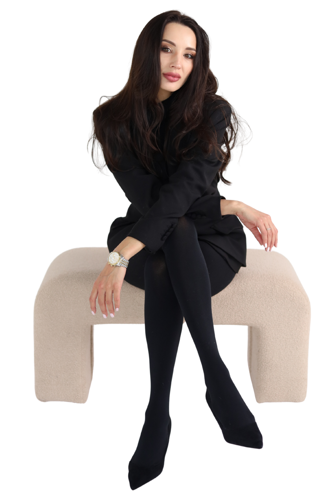
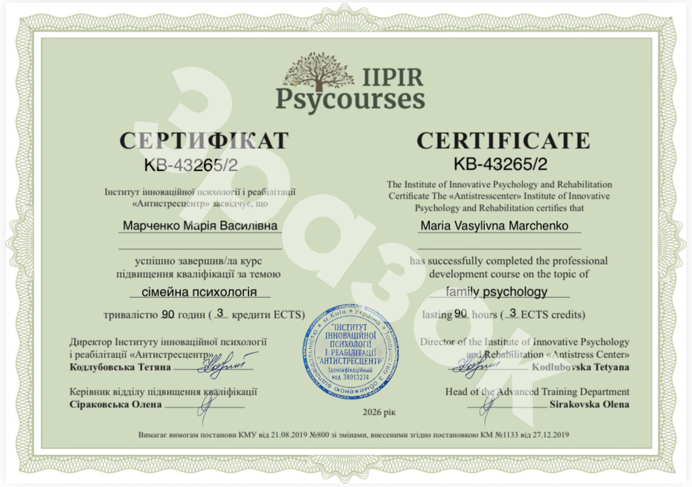

Академія MyKeratin
Твій шлях до сертифікованого експерта
Отримай міжнародний сертифікат, впевненість експерта та техніки, які щоразу дають ідеальний результат.
Купити курсПро курс
Вони охоплюють усі сучасні методики: кератинове вирівнювання, ботокс, нанопластику, холодне відновлення та авторські техніки.
Понад 7 років досвіду у сфері догляду за волоссям.
Ексклюзивні формули з Бразилії (Bloom cosmetics, MaxHair Professional).
Ексклюзивні бренди: Natureza та Love Potion.
MYKERATIN — ПРОФЕСІЙНА КОСМЕТИКА, ЯКА ЗМІНЮЄ ВОЛОССЯ
Дізнатися більше про курс
До Академії MyKeratin:
Після курсу:
Ми не просто навчаємо технік. Ми формуємо мислення експерта, який приймає рішення і заробляє як професіонал.
Побачити програмуМи створили Академію як продовження нашого 7-річного шляху у сфері професійного догляду за волоссям.
Практика Наука Бізнес
Ми не просто навчаємо виконувати процедури — ми вчимо розуміти волосся на молекулярному рівні і перетворювати ці знання в якісні послуги та стабільний дохід.
Почати навчанняЕксперт курсу
Анна — технолог-практик і авторка власних методик роботи з кератином, ботоксом та нанопластикою.
Вона поєднує теорію, практику і розбір реальних кейсів, щоб кожен студент закінчив курс із:
Експерт курсу
Анна — технолог-практик і авторка власних методик роботи з кератином, ботоксом та нанопластикою.
Вона поєднує теорію, практику і розбір реальних кейсів, щоб кожен студент закінчив курс із:
Про курс
Покрокова, системна програма, розроблена для повної трансформації ваших навичок.
Системність: Від базової хімії волосся до просування своїх послуг.
Професійність: Робота виключно з перевіреними, преміальними засобами
Практичність: Максимум реальних кейсів та мінімум "води".
Можливість: Придбати повний курс або окремий блок.
Хочеш відчути впевненість? Отримаєш базу, чіткі протоколи та підтримку, щоб швидко стартувати без страху.
Відчуваєш, що застигла на місці? Освой передові методики відновлення волосся та впевнено переходь у преміум-сегмент.
Прагнеш підняти рівень команди? Навчи своїх спеціалістів працювати за єдиним стандартом і виведи салон на міжнародний рівень.
Програма курсу
Переваги
Результат навчання
Після кожного блоку ти проходиш короткий тест і практичне завдання.
Усі результати зберігаються в персональному кабінеті.
Після завершення навчання ти отримуєш сертифікат MyKeratin — доказ твоєї кваліфікації, який визнають клієнти та салони по всьому світу.
Придбати курс
У тебе є пристрасть.
У нас — система, наука і наставництво.
Разом ми перетворимо твої навички на експертність, яка приносить прибуток. Почни свій шлях до статусу Топ-майстра вже сьогодні.
Зареєструватися заразАкадемія MyKeratin — місце, де майстри стають експертами.